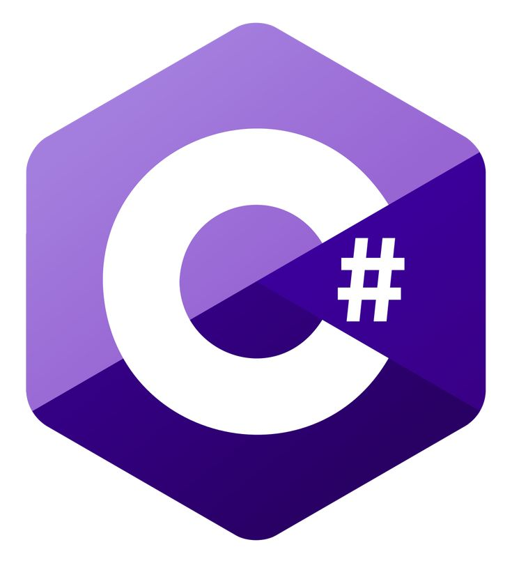
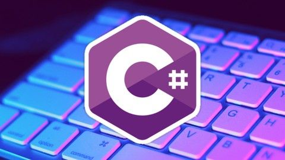
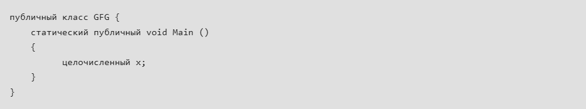
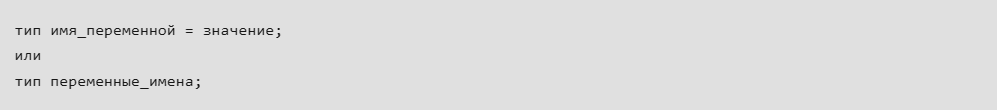
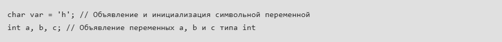
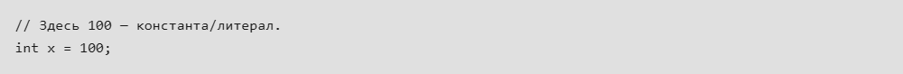
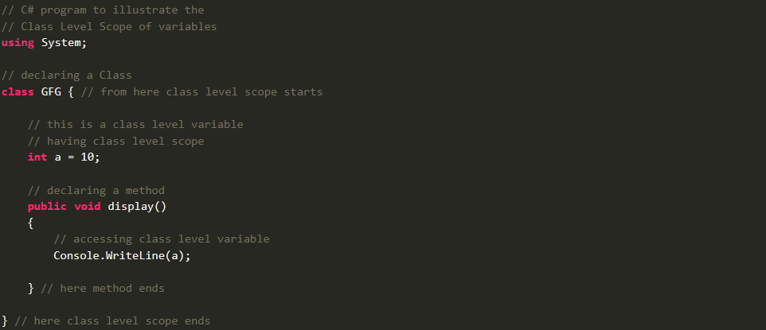

Руководство по языку
программирования C#
На сегодняшний момент язык программирования C# один из
самых мощных, быстро развивающихся и востребованных
языков в ИТ-отрасли. В настоящий момент на нем пишутся
самые различные приложения: от небольших десктопных
программок до крупных веб-порталов и веб-сервисов,
обслуживающих ежедневно миллионы пользователей.

C# (произносится как «C-sharp») — современный, универсальный, объектно-ориентированный язык программирования, разработанный Microsoft в 2000 году и работающий на платформе .NET Framework. Независимо от того, создаете ли вы приложения для Windows, занимаетесь разработкой игр на Unity или работаете над корпоративными решениями, C# является одним из лучших вариантов для разработчиков по всему миру.

С# был разработан компанией Microsoft под руководством Андерса Хейлсберга и его команды в рамках инициативы .Net и был одобрен Европейской ассоциацией производителей компьютеров (ECMA) и Международной организацией по стандартизации (ISO). C# входит в число языков для Common Language Infrastructure, а текущей версией C# является версия 7.2. C# очень похож на Java синтаксически и прост для пользователей, которые знают C, C++ или Java.
В языках программирования идентификаторы используются для идентификации. Или, другими словами, идентификаторы — это определяемые пользователем имена компонентов программы. В C# идентификатором может быть имя класса, имя метода, имя переменной или метка.

Типичная программа использует различные значения, которые могут изменяться во время ее выполнения. Например, программа, которая выполняет некоторые операции со значениями, введенными пользователем. Значения, введенные одним пользователем, могут отличаться от введенных другим пользователем. Следовательно, это делает необходимым использование переменных, поскольку другой пользователь может не использовать те же значения. Когда пользователь вводит новое значение, которое будет использоваться в процессе работы, оно может временно храниться в оперативной памяти компьютера, и эти значения в этой части памяти изменяются на протяжении всего выполнения, и поэтому появился другой термин для этого, который известен как переменные . Таким образом, по сути, переменная — это заполнитель информации, которая может быть изменена во время выполнения. А переменные позволяют извлекать и манипулировать сохраненной информацией.


Фиксированные значения называются литералами . Литерал — это значение, которое используется переменными. Значения могут быть целыми числами, числами с плавающей точкой, строкой и т.д.
Буквы могут быть следующих типов:
Целочисленные литералы
Литералы с плавающей запятой
Символические литералы
Строковые литералы
Нулевые литералы
Булевы буквальные

Часть программы, в которой доступна конкретная переменная, называется областью действия этой переменной. Переменная может быть определена в классе, методе, цикле и т.д. В C/C++ все идентификаторы лексически (или статически) ограничены областью действия, т.е. область действия переменной может быть определена во время компиляции и независимо от стека вызовов функции. Но программы на C# организованы в виде классов.
Таким образом, правила области видимости переменных в C# можно разделить на три категории следующим образом:
Область действия уровня класса
Область действия на уровне метода
Область действия на уровне блока

Для чего используется язык программирования C#?
C# — это универсальный язык программирования, который в основном используется для разработки Windows-приложений, веб-сервисов и игр на платформе .NET.
В чем преимущество оператора 'us' в C#?
Оператор using предоставляет ресурсы для обработки перед их автоматической утилизацией после завершения выполнения.
Что такое сериализация?
Чтобы передать объект по сети, нам нужно преобразовать его в поток байтов. Это называется сериализацией.
Как объявить и инициализировать переменные в C#?
Переменные — это именованные контейнеры, в которых хранятся значения разных типов. Чтобы объявить переменную в C#, нужно указать ее тип и имя.